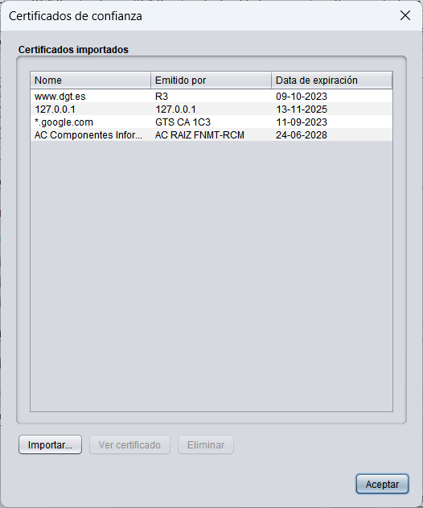
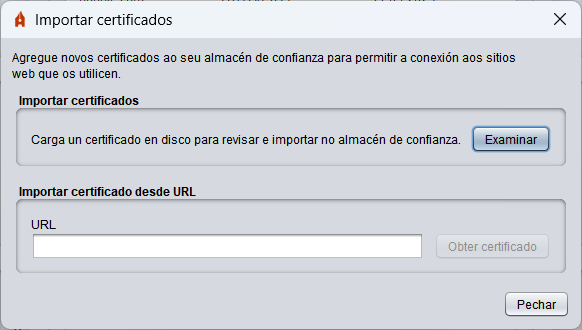
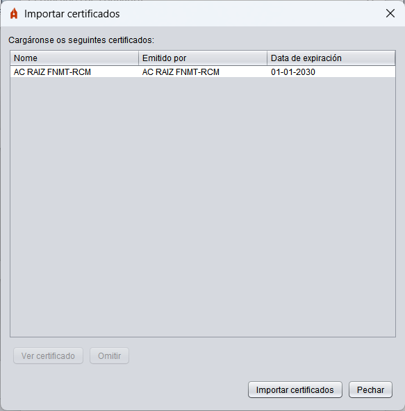

Certificados de confianza
Autofirma realiza conexións cara a servidores remotos para diversas funcións. Neste apartado, permítese importar ao almacén de confianza de Autofirma os certificados dos servidores aos que se que conecte Autofirma para que sexan recoñecidos como de confianza.

As opcións nesta pantalla son:
- Importar: Ao seleccionar esta opción, abrirase un diálogo onde se permite importar un certificado seleccionando o arquivo desde unha ruta local ou desde un URL. No caso de que se importe localmente, permítese a selección dun ou varios arquivos e en caso dunha importación mediante URL, importaranse o emisor e os seus certificados superiores da cadea de certificación.

Unha vez que se obtiveron os certificados, aparecerá a seguinte pantalla cos certificados que se cargaron.

As opcións nesta xanela son:
- Ver certificado: Abre unha xanela coa información do certificado que se seleccionou na lista.
- Omitir: Descarta o certificado que se seleccionou na lista para que non sexa importado.
- Importar certificados: Importa os certificados indicados na lista ao almacén de confianza de Autofirma.
- Pechar: Pecha a xanela.
- Ver certificado: Abrirá unha xanela coa información do certificado que se seleccionou na lista.
- Eliminar: Permite eliminar do almacén de confianza de Autofirma o certificado seleccionado.
Se se pulsa o botón Aceptar, pecharase a xanela.